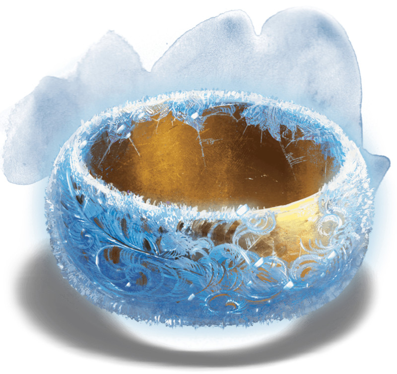

Anneau de l'Hiver
Anneau, artéfact (nécessite un lien)
L'anneau de l'Hiver est un simple anneau d'or qui s'ajuste au doigt de son porteur. Une fine couche de glace qu'une chaleur conventionnelle ne saurait faire fondre recouvre l'extérieur de celui-ci. Il est froid au toucher et peut engourdir la main de celui qui le porte depuis peu, sensation qui s'estompe une fois le lien forgé.
Objet intelligent tentant de prendre le contrôle de toute créature l'enfilant, l'anneau tentera en cas de succès de la forcer à causer du tort à tout son entourage, dans une tentative d'attirer sur son porteur l'ire de ses ennemis ainsi qu'un destin funeste.
Conscience. L'anneau de l'Hiver est un objet magique intelligent chaotique mauvais doté d'une Intelligence et d'une Sagesse de 14, et d'un Charisme de 17. Communiquant en transmettant des émotions à son porteur, il perçoit le monde qui l'entoure par une vision et une ouïe conventionnelles jusqu'à 18 m. Assoiffé de destructions, l'anneau aime faire souffrir les autres, qui qu'ils soient.
Antidétection. Défiant toute tentative de localisation, l'anneau de l'Hiver bloque les sorts de divination et de détection dirigés contre lui ou son porteur.
Temps gelé. Aussi longtemps que vous portez l'anneau, vous ne vieillissez pas. D'une manière similaire à l'animation suspendue, vous ne vieillissez pas en accéléré en ôtant l'anneau. Celui-ci ne vous protège cependant pas d'un effet magique ou surnaturel accélérant le vieillissement, comme le Visage effroyable d'un fantôme.
Immunité au froid. Tant que vous le portez et y êtes lié, l'anneau de l'Hiver vous octroie une immunité aux dégâts de froid ainsi qu'une protection contre les effets du froid extrême (voir le chapitre 5 du Guide du Maître).
Magie. L'anneau de l'Hiver contient 12 charges qu'il récupère chaque jour à l'aube. Tant que vous portez l'anneau, vous pouvez dépenser autant de charges qu'indiqué pour activer l'une des propriétés suivantes :
Autres propriétés. La rumeur prête à l'anneau de l'Hiver des capacités additionnelles qui ne sauraient être employées que par un être maléfique dont la volonté ne saurait être brisée par l'anneau. Les géants du givre croient depuis longtemps que l'anneau pourrait être employé pour geler des mondes entiers, tandis qu'un djiin au service d'un pasha Calishite affirmait que l'anneau possédait le pouvoir d'invoquer et de contrôler des dragons blancs, ainsi qu'un puissant élémentaire primordial de froid du nom de Cryonax.
Détruire l'anneau. Pratiquement rien ne saurait endommager l'anneau de l'Hiver, pas même la plus intense des flammes, fût-elle magique. Mais s'il est placé au doigt de l'archifée connue sous le nom de la Reine de l'Été, il fond et sera alors détruit pour toujours.
Objet intelligent tentant de prendre le contrôle de toute créature l'enfilant, l'anneau tentera en cas de succès de la forcer à causer du tort à tout son entourage, dans une tentative d'attirer sur son porteur l'ire de ses ennemis ainsi qu'un destin funeste.
Conscience. L'anneau de l'Hiver est un objet magique intelligent chaotique mauvais doté d'une Intelligence et d'une Sagesse de 14, et d'un Charisme de 17. Communiquant en transmettant des émotions à son porteur, il perçoit le monde qui l'entoure par une vision et une ouïe conventionnelles jusqu'à 18 m. Assoiffé de destructions, l'anneau aime faire souffrir les autres, qui qu'ils soient.
Antidétection. Défiant toute tentative de localisation, l'anneau de l'Hiver bloque les sorts de divination et de détection dirigés contre lui ou son porteur.
Temps gelé. Aussi longtemps que vous portez l'anneau, vous ne vieillissez pas. D'une manière similaire à l'animation suspendue, vous ne vieillissez pas en accéléré en ôtant l'anneau. Celui-ci ne vous protège cependant pas d'un effet magique ou surnaturel accélérant le vieillissement, comme le Visage effroyable d'un fantôme.
Immunité au froid. Tant que vous le portez et y êtes lié, l'anneau de l'Hiver vous octroie une immunité aux dégâts de froid ainsi qu'une protection contre les effets du froid extrême (voir le chapitre 5 du Guide du Maître).
Magie. L'anneau de l'Hiver contient 12 charges qu'il récupère chaque jour à l'aube. Tant que vous portez l'anneau, vous pouvez dépenser autant de charges qu'indiqué pour activer l'une des propriétés suivantes :
- Au prix d'une charge et par une action, vous pouvez utilisez l'anneau pour abaisser la température dans une sphère de 36 m de rayon centrée sur un point que vous pouvez voir dans un rayon de 90 m autour de vous. La température baisse de 10°C par minute, jusqu'à un minimum de -35°C. De la glace et du givre commencent à se former sous 0°C. Cet effet est permanent jusqu'à ce que vous utilisiez l'anneau pour y mettre un terme au prix d'une action, après quoi la température revient à la normale au rythme de 5°C par minute.
- Vous pouvez lancer chacun des sorts suivants (sauvegarde contre les sorts DD 17) en dépensant le nombre de charges correspondant : main de Bigby (2 charges, la main est faite de glace, est immunisée aux dégâts de froid et inflige des dégâts contondants au lieu de dégâts de force), cône de froid (2 charges), peau de glace (3 charges, comme peau de pierre mais avec une apparence de glace conservant les propriétés de la pierre), tempête de grêle (2 charges), sphère glaciale d'Otiluke (3 charges), tempête de neige (1 charge), croissance d'épines (1 charge, les épines sont des pics de verglas) ou mur de glace (2 charges).
- Vous pouvez utiliser l'anneau avec une action pour créer un objet inanimé fait de glace (2 charges) ou une créature de glace animée (4 charges). L'objet de glace ne peut comporter de parties mobiles, doit tenir dans un cube de 3 m de côté et a la solidité de la pierre ou de l'acier (au choix). La créature de glace prendra modèle sur une bête de FP 2 ou inférieur, avec les différences suivantes : la créature est un artificiel avec la vulnérabilité aux dégâts de feu, l'immunité aux dégâts de poison et de froid, ainsi qu'aux états charmé, épuisement, effrayé, paralysé, pétrifié et empoisonné. La créature de glace n'obéit qu'à son créateur. Qu'il s'agisse d'un objet ou d'une créature, l'entité invoquée apparaît dans un espace inoccupé à 18 mètres ou moins de vous. Elle disparaît au bout de 24 heures ou si ses points de vie tombent à 0. En cas d'extrême chaleur, elle fond et perd 5 (1d10) points de vie par minute. Utilisez les conseils du chapitre 8 du Guide du Maître pour déterminer les points de vie d'un objet inanimé si nécessaire.
Autres propriétés. La rumeur prête à l'anneau de l'Hiver des capacités additionnelles qui ne sauraient être employées que par un être maléfique dont la volonté ne saurait être brisée par l'anneau. Les géants du givre croient depuis longtemps que l'anneau pourrait être employé pour geler des mondes entiers, tandis qu'un djiin au service d'un pasha Calishite affirmait que l'anneau possédait le pouvoir d'invoquer et de contrôler des dragons blancs, ainsi qu'un puissant élémentaire primordial de froid du nom de Cryonax.
Détruire l'anneau. Pratiquement rien ne saurait endommager l'anneau de l'Hiver, pas même la plus intense des flammes, fût-elle magique. Mais s'il est placé au doigt de l'archifée connue sous le nom de la Reine de l'Été, il fond et sera alors détruit pour toujours.
Adventures (Tomb of Annihilation)
